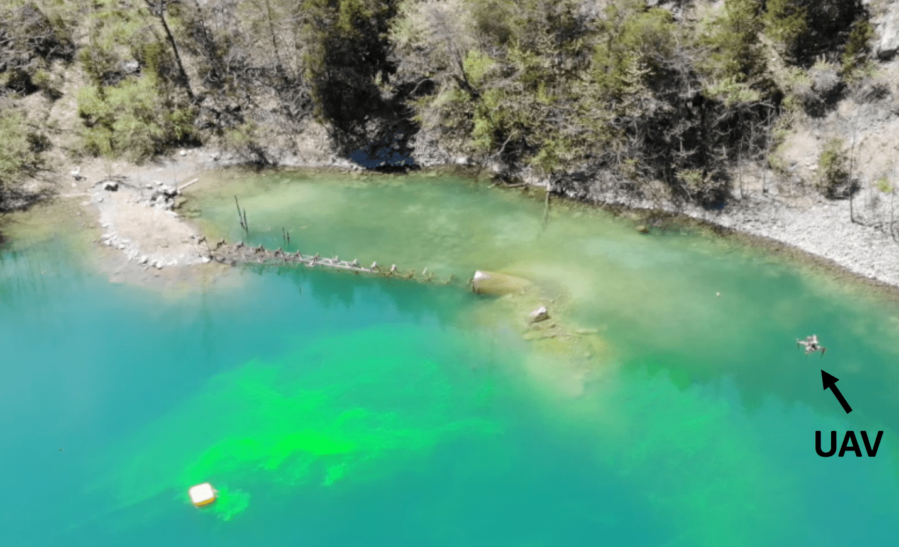
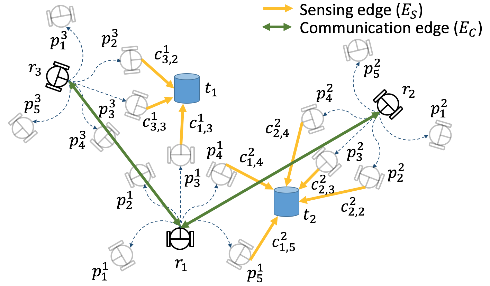

Yoonchang SungResearch StatementMy research interests lie in developing algorithms for distributed planning, learning and making decisions under uncertainty that give provable guarantees. Particularly, I am interested in multi-robot coordination algorithms that address challenges that may come from hardware constraints (such as sensing and communication limitations). Some of the highlighted works are as follows: (1) Tracking an unknown and varying number of targets for search and rescue by exploiting the random finite set theory; (2) Developing distributed approximation algorithms (i.e., local and greedy) for multi-robot multi-target tracking that give theoretical bounds on the number of communication rounds; (3) Proposing a competitive online algorithm (with respect to the offline optimal solution) for multi-robot exploration of an unknown hazardous plume; and (4) Coordinating between the UAV and a robotic boat to sequentially decide where to collect water samples, given a limited budget, that may contain hazardous agents in a lake. I have implemented the proposed algorithms on mobile robots and the UAVs using ROS, interfaced with onboard cameras, and verified the performance of algorithms by carrying out field experiments over the ground and a lake. Online Multi-Robot Exploration of a Translating Plume of Unknown Size and ShapeIn this work, we study the problem of exploring a translating plume with a team of aerial robots. The shape and the size of the plume are unknown to the robots. The objective is to find a tour for each robot such that they collectively explore the plume. Specifically, the tours must be such that each point in the plume must be visible from the field-of-view of some robot along its tour. We propose a recursive Depth-First Search (DFS)-based algorithm that yields a constant competitive ratio for the exploration problem. The competitive ratio is \(\frac{2(S_r+S_p)(R+\lfloor\log R\rfloor)}{(S_r−S_p)(1+\lfloor\log R\rfloor)}\) where \(R\) is the number of robots, and \(S_r\) and \(S_p\) are the robot speed and the plume speed, respectively. We also consider a more realistic scenario where the plume shape is not restricted to grid cells but an arbitrary shape. We show our algorithm has \(\frac{2(S_r+S_p)(18R+\lfloor\log R\rfloor)}{(S_r−S_p)(1+\lfloor\log R\rfloor)}\) competitive ratio under the fat condition. We empirically verify our algorithm using simulations.
Multi-Robot Multi-Target Tracking under Limited BandwidthWe study two multi-robot assignment problems for multi-target tracking. We consider distributed approaches in order to deal with limited sensing and communication ranges. We seek to simultaneously assign trajectories and targets to the robots. Our focus is on local algorithms that achieve performance close to the optimal algorithms with limited communication. We show how to use a local algorithm that guarantees a bounded approximate solution within \(\mathcal{O}(h\log 1/\epsilon)\) communication rounds. We compare with a greedy approach that achieves a 2–approximation in as many rounds as the number of robots. Simulation results show that the local algorithm is an effective solution to the assignment problem.
Tracking an Unknown and Varying Number of TargetsWe study the problem of searching and tracking a collection of moving targets using a robot with a limited Field-Of-View (FOV) sensor. The actual number of targets present in the environment is not known a priori. We propose a search and tracking framework based on the concept of Bayesian Random Finite Sets (RFSs). Specifically, we generalize the Gaussian Mixture Probability Hypothesis Density (GM-PHD) filter which was previously applied for only tracking problems to allow for simultaneous search and tracking. The proposed framework can extract individual target tracks as well as estimate the number and spatial density of the targets. We also show how to use Gaussian Process (GP) regression to extract and predict nonlinear target trajectories in this framework. We demonstrate the efficacy of our techniques through representative simulations where we also compare the performance of two active control strategies.
Human Following using a Hierarchical Data AssociationHuman-following in a cluttered environment is one of the challenging issues for mobile service robot applications. Since a laser range finder (LRF) is commonly installed for autonomous navigation, it is advantageous to adopt an LRF for detection and tracking humans. In this work, we aim at the reliable human tracking performances in a dynamic cluttered environment. The key idea is to develop a hierarchical sample-based joint probabilistic data association filter (HSJPDAF) by focusing on the leg positions as well as human positions. The proposed HSJPDAF consists of two levels in order to consider the interdependence between targets. Possible locations of multiple human targets can be simultaneously estimated on the basis of Bayesian filtering. Comparison with the general technique was carried out to verify the performance of HSJPDAF in both artificial indoor and real-world environments. Owing to the hierarchical framework, the proposed method shows the improved robustness by reducing the target loss rate significantly in a dynamic cluttered environment.
|